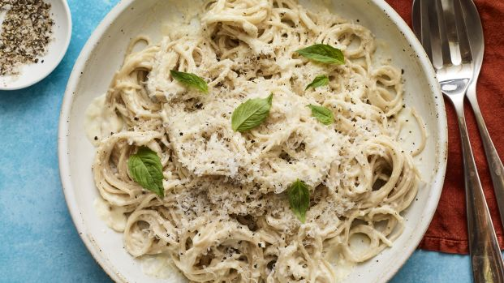

Paste cu usturoi
Ingrediente:
- 50 gr unt
- 2 cepe medii sau una mare
- Praz
- 500 gr cartofi albi fainosi
- 4 linguri smantana de gatit
- Sare si piper
Dificultate:
Timp prep:
Calorii:
Categorie:
Usor
15 min
322
Vegetarian

Mod de preparare:
- Boil the pasta in a large pot of salted water. Get this going before you start cooking the chicken and you can add the dried pasta right around the same time you start cooking the chicken breast. Save a cup of the pasta water to thin the sauce if needed
- Cook the chicken breasts in a combination of oil and butter for golden crispness. This is our favorite golden, crispy chicken technique. You can read more about it here. You can cover the chicken breasts with foil while you finish the sauce to keep them warm.
- Pasta is ready, chicken is ready, make your sauce. Once your pasta is cooked and drained, and your chicken is cooked and sliced, the actual Alfredo sauce takes just a few minutes to make in the same skillet you cooked the chicken in.